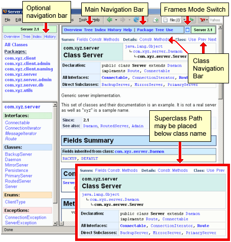

KtsDoclet Documentation
version 1.0.0
KtsDoclet is a replacement of the Standard Doclet provided with JDKTM. When used with the JavadocTM tool KtsDoclet generates HTML documentation from JavadocTM comments in JavaTM source files.
General Information
Introduction.
KtsDoclet is a drop-in replacement of the Standard Doclet provided with JDK. KtsDoclet is not an extension or a modification of the Standard Doclet, it is an independent and proprietary implementation of the Doclet based on the Doclet API. While the documentation generated by KtsDoclet has the same overall structure as the documentation generated by the Standard Doclet, there are certain differences described throughout this document. KtsDoclet supports all options of the Standard Doclet with the exception of the option
-footer. Several options, while supported, function in a slightly
different way. The differences in functionality of certain options are described throughout this
document.
In vast majority of cases the scripts used to generate the documentation using default Standard Doclet can run without modification with KtsDoclet after ensuring the
-footer option is removed and adding
the -doclet option in order to call KtsDoclet instead of the Standard Doclet.
The list of differences between KtsDoclet and the Standard Doclet, including options not supported or
processed differently by KtsDoclet and the new options provided by KtsDoclet can be found in
the next section
"overview of specifics of KtsDoclet".
Detailed instructions on how to run Javadoc tool with KtsDoclet is provided in section
"how to run KtsDoclet".
You may skip the remaining portion of this section if you understand well how the documentation generation is performed by the Javadoc tool and the Doclet. This is documented very well in the documentation of the Javadoc tool, however, we should highlight certain aspects for users who never had to learn the details of how the Javadoc tool and the Doclet work together to generate the documentation. It may help you to understand better which command-line parameters are processed by which program.
Generation of the documentation from the set of JavaTM source files consists of two sequential steps.
First, the Javadoc tool parses the source files, extracts the Javadoc comments and builds an internal collection of the documentation data (the Javadoc tool is designed by Sun Microsystems, Inc. and is provided as a part of JDK). In order to perform this step the Javadoc tool requires command-line options defining packages and classes that should be documented, if only public, public and protected, or all including private fields and methods should be included into the documentation, where the source files are located, and other. KtsDoclet (nor any Doclet) is not involved at this step. This step is performed only by the Javadoc tool, which is a part of the JDK. Notice the Javadoc tool itself only parses the source files but does not generate any documentation files. Consequently it requires and reads all command-line parameters defining what to document.
Second step is performed by the Doclet called by the Javadoc tool after it completes the first step. At this step the Javadoc tool passes all documentation information to the Doclet via Doclet API and the Doclet generates all HTML (or other) files. Doclet is entirely responsible for the format and structure of the generated documentation, Javadoc tool does not participate in generation of the documentation files. (Javadoc tool performs some minor additional tasks at this step, however it is not important for the purpose of this document.)
Because you normally run the "javadoc" as one single process, it is sometimes easy to overlook the two-step nature of the documentation generation process. While it is not, generally speaking, important for users of the Javadoc tool and the Doclet, it becomes somewhat important to understand when you use custom Doclets. It may be important to know what parameters are read and used by the Javadoc tool and parameters read and used by the Doclet. With few minor exceptions, they read and use different parameters which, as a user, you enter all into the same command-line (or parameters file or files).
This documentation contains only detailed description of all options provided by the KtsDoclet. Options provided by the Javadoc tool are listed in a separate table with only a brief summary of their functionality. Detailed description of the Javadoc tool options is provided with the JDK documentation.
Overview of impotant specifics of KtsDoclet.
-doclet and optionally -docletpath
parameters specifying KtsDoclet as the custom Doclet.
The only change that may be required
(other than specifying KtsDoclet via -doclet) is to remove the
-footer option if it is used and specifies the text different than the text specified by
-header. KtsDoclet does not support the -footer option.
Detailed instructions on how to run KtsDoclet is documented in section
"how to run KtsDoclet".
KtsDoclet generates the documentation with the same overall structure as the documentation
generated by the Standard Doclet.
KtsDoclet supports all options provided by the Standard Doclet with the only exception of the option
-footer.
KtsDoclet also supports several additional options that you may like to use. Finally, there are certain
differences between the Standard Doclet and KtsDoclet in processing of custom block tags implemented via Taglets.
All differences are described in details throughout the documentation.
Below is a brief summary of important specifics of KtsDoclet. While it does not list all
additional features, it highlights the important new features and the differences with the
Standard Doclet you need to know about.
It is recommended that you familiarize yourself with this list before running KtsDoclet.
-footer is not supported.
It is accepted only if it specifies the same text as the option
-header, otherwise an error is reported and the documentation is not generated.
-tag option is fully supported, the position of these options in the command
line or file do not define the order of block tags in the output.
index.html
configured as 3-frames in all cases, even when one or several classes or one package are documented.
The reason is that even when documenting a single class it may have nested classes such that the list
of documented classes is more than one. Also, if the class is declared in a package, the left-top frame
shows the package name. If a single package is documented, users can select that package such that the list
of classes in the left-bottom frame is shown ordered by class type as opposed to the list of all classes
sorted alphabetically (users will have both choices).
Generating different configurations of index.html depending on what is being documented is currently not planned.
-splitindex is allowed but is ignored.
Option -nosplitindex allows to generate index as one page.
-noframeswitch.
-stylesheetfile option is supported and works, however,
you should consider using -userstylesheet option instead.
@since tags and calls the combined information page
"History".
Various options allow you to control how history is built.
-warn.
-nooutput
that requests to process all Javadoc comments and print all warnings and errors
but do not generate output files. This may be very convenient if you want to only
check if Javadoc comments have problems. This will also print all warnings and errors much faster.Internationalization:
Currently the text added by KtsDoclet into documentation pages (not the Javadoc comments) is available only in English. The source files and the Javadoc comments in the source files may be present in any language and encoding, KtsDoclet fully supports the -docencoding and -charset options. However, the text automatically generated by KtsDoclet as well as warnings and errors KtsDoclet prints during processing are available only in English.
Future versions of KtsDoclet may be expanded to support additional languages.
Description of output files and directory structure.
index.html from the root output directory before it generates
the documentation, such that if the documentation generation is interrupted for any
reason, the index.html and some other main files are not present in the output
directory. The files are not removed and the output directory is not created
if KtsDoclet or the Javadoc tool detect errors in the command-line parameters.
KtsDoclet, however, does not remove all files or subdirectories. It is
recommended to clean the output directory via shell script before running KtsDoclet.
The structure and name of output files created by KtsDoclet are listed below.
The tree below shows the directory structure and the names of default files created by KtsDoclet
using an example of the directory structure generated for a sample package
com.xyz.server:
Performance and memory requirements.
The issues of performance and memory required to generate the documentation are likely not important to users generating the documentation of a small or medium-size system. While it is difficult to quantify the size of the system, we assume, very approximately, that the systems with less than 200 classes are considered small and systems with less than 1,000 average-size classes are considered medium-size systems. This is only an estimate, the "size" of the documented system also depends on the number of class elements, such as methods, fields, etc., as well as on the amount of the Javadoc comments. The sources provided with the JDK is an example of a big system.
You should find that in many cases KtsDoclet generates the documentation faster than the Standard Doclet. Exact time required to generate the documentation depends on numerous factors, including but not limited to the size and structure of the Javadoc comments, number of classes, generated output (such as -linksource, -use and other) and performance of your hardware, specifically of your hard drives. Depending on all factors, performance advantage of KtsDoclet may be minimal or significant. We do not publish any performance benchmarks. In case it is important to you, you need to test performance of KtsDoclet in your environment. Notice that the time required by any Doclet does not include the time required by the Javadoc tool to parse the source files. When running with the Standard Doclet it may be difficult to see the time split between the Javadoc tool and the Standard Doclet. When KtsDoclet is used, it prints the banner line when it is called by the Javadoc tool, it also prints the time report at the end of its run.
While performance of documentation generation may be not important during the final generation process, it may be more important during debugging and verification of the documentation after changes to Javadoc comments have been made, when developers or technical writers may need to generate the documentation many times. It is recommended to avoid using -linksource and -use options during that time because they significantly slow down the doclet (both of those options generate an additional file for each documented class file). Also notice that option -nooutput allows to very quickly verify if the Javadoc comments produce any warnings or errors without actually generating the documentation files.
KtsDoclet uses slightly more memory than when Javadoc tool uses the Standard Doclet, normally between 10% and 20% more. Note that Javadoc tool and (any) Doclet create very large number of objects in memory and use very large memory during documentation generation. It is very strongly recommended to allow the Javadoc tool and the Doclet to have as much memory as they need (via
-J-Xmx
parameter to Javadoc tool or -Xmx parameter to the JVM) such that the
JVMTM does not need to
call the garbage collector frequently. If javadoc is limited in memory the time required to
generate the documentation for a large system may increase very significantly.
Considering that generating the documentation is a relatively short-running process,
it is strongly recommended to allow the Javadoc tool (and the Doclet it calls)
to use all available memory. For example, as an estimate, generating the documentation for all
sources provided with the JDK (about 2 million lines) requires about 700MB of memory
in order to prevent frequent garbage collection. While it may run in less memory, the time
will increase very significantly (this estimate was obtained on a 32-bit system, we have not tested
and it may be more on 64-bit platforms).
This will be, of course, significantly less for smaller systems. Note that the documentation
for even such huge set of source files requires less than 1Gb of memory, which is normally
available on modern hardware. If you are generating the documentation for a very large system we
advise to either always provide 1GB or more via -Xmx, or run it once with unlimited memory and
check what was the highest memory consumption (which may be significantly less than 1GB).
Then use that as a value of parameter -Xmx (-J-Xmx for Javadoc tool) in subsequent runs.
Example of the output and description of page elements.
Notice that many elements of generated pages are optional, as well as positioning of the superclass path of a class may be changed via a command-line option. Optional elements may be optional depending on the command-line parameters used when the documentation was generated (such as the navigation bar in top-left frame, Frames/No-Frames switch, "Use" link, and other), or they may be optional because their presence depends on if the corresponding page or section of a page exist in the generated documentation (such as links in the class navigation bar, and other).
 The optional navigation bar in the left-top frame is generated if -framenavbar option was specified. Class superclass path (not present for interfaces and annotation types) is positioned on the right side of the class name by default in order to make the class header part of the page to be more compact. If you prefer the superclass path to be positioned below the class name (as shown on the insert), you can request it via -treeundername option.
Main navigation bar is located at the top of each documentation page and consists of the following sections:
Almost all elements in the main navigation bar are optional, with the exception of the "Overview" link. Links to the tree, index, history and help pages are shown only if generated. By default all these links are present, they can be disabled via -notree, -noindex, -notree, -nohelp options. As mentioned in the description of these options there is normally no reason to disable these sections of the documentation. They take very little time to be generated and it is hard to anticipate what information users of the documented system may want to use.
When page shown in the right frame is in package context the package links are shown in the main navigation bar. Page is in package context when it documents a package (overview, tree, use, etc.), or documents the class (interface, etc). If shown page is not in package context, such as overview of the system, hierarchy of all classes, index pages and similar, the package links are not shown.
Frames/No-Frames switch is generated by default but can be disabled using option -noframeswitch. Notice that the main navigation bar does not include the links to sections of the class document. Such links are present in the class navigation bar located just above the name of the class. Class nagivation bar consists of three parts, which are all optional and are present only if corresponding sections are present in the class document. The three parts of the class navigation bar include:
All parts and links in the class navigation bar are present only if the corresponding section in the class document page or another page for this class exist. Normally the class navigation bar is present (with some links) because it is completely absent only if the class has no inherited elements, no elements defined in the class and it is the only member in its package.
Also notice that description of the class (interface, etc.) shows the class name, optional inheritance tree if this is a regular class, and the Class Information Table which is located right below the name and the inheritance tree. Class Information Table shows the formal class declaration, description of type parameters, all implemented interfaces, all superinterfaces, all direct subclasses and other similar items (all mentioned elements are present only if applicable and exist for a documented class or interface). The Class Information Table does not contain any block tags, with the exception of the description of type parameters if their description is present in the Javadoc comments via block tags. All other rows in this table (except the type parameters) are calculated and created automatically by the Doclet. The type parameters are included into Class Information Table because they describe the core class information. All other block tags such as
@since, @version, @see
and other are placed into the block tag table following class description text.
The order of block tags in the table is described in
"processing of tags" section of this document.
How to run KtsDoclet
| KtsDoclet requires: | ktsdoclet.jar |
| Full name of the main class: | com.kpht.doc.KtsDoclet |
You can run KtsDoclet (i.e. run Javadoc tool using KtsDoclet as the Doclet) in one of two ways:
-doclet option of the Javadoc tool.
Both ways are documented in details below. We assume you are generally familiar with how to run javadoc, documentation below describes only addition parameters required to use KtsDoclet. If you are new to using the javadoc program, please read the Javadoc tool documentation page referenced in the beginning of this section.
Running KtsDoclet using -doclet option of the Javadoc tool.
javadoc -doclet com.kpht.doc.KtsDoclet
-docletpath path/ktsdoclet.jar
...all other options and/or options file(s)...
If you place ktsdoclet.jar into your CLASSPATH (like you would place any other JAR file), you can then omit the -docletpath parameter:
javadoc -doclet com.kpht.doc.KtsDoclet ...all other parameters...
Note that in the examples above all options required to generate the documentation may be also present via the options file or files. For example, if all options required to generate certain documentation are recorded in file docparams.txt and you used it as:
javadoc @docparams.txt
then you need to modify that line as:
javadoc -doclet com.kpht.doc.KtsDoclet
-docletpath path/ktsdoclet.jar
@docparams.txt
or
javadoc -doclet com.kpht.doc.KtsDoclet @docparams.txt
if ktsdoclet.jar is in your CLASSPATH.
Running KtsDoclet using kphtdoc program.
tools.jar from the JDK. tools.jar is located
in the lib subdirectory of your JDK installation directory.
If you find it more convenient, include
tools.jar and
ktsdoclet.jar into your CLASSPATH and then
you can generate the documentation by running:
java kphtdoc ...Javadoc tool and KtsDoclet options...
If, from the sample in previous section, all options are placed into docparams.txt file, simply run:
java kphtdoc @docparams.txt
You need to be aware that while all options are entered the same way using this method as they would using
Javadoc tool directly, the exception is the -Jflag option of the Javadoc tool.
-Jflag option is passed to the Javadoc tool in order to specify flag for the JVM.
Because you are running the JVM directly when using kphtdoc, the -Jflag option is no longer available.
JVM options need to be specified directly:
java <JVM-params> kphtdoc ...Javadoc tool and KtsDoclet options...
For example, if you were running:
javadoc -J-Xmx300m @docparams.txt
you should now use it as:
java -Xmx300m kphtdoc @docparams.txt
Consequently, if your options file has any lines specifying -Jflag Javadoc tool option, those lines need to be removed
and you should specify JVM flags directly.
kphtdoc provides online help when you run:
java kphtdoc -help
It prints a brief summary of all options, including the options provided by the Javadoc tool and the
options provided by KtsDoclet. The combined number of all options supported by the Javadoc tool and KtsDoclet
is very large. The online help can serve
as a biref reminder of options names. Detailed list of all options and description of
their functionality is provided in this document.
Functionality
-footer option as described in
"compatibility with Standard Doclet").
The Standard Doclet is used by the Javadoc tool by default.
KtsDoclet will always generate the documentation (you may see different and/or
additional warnings). The documentation will have the same overall structure, similar
navigation capabilities and will generally resemble the documentation generated by the
Standard Doclet. You will, however, see different look and fell of the documentation pages,
as well as certain differences in how index, history and use pages are built.
Additionally, KtsDoclet processes block tags in a different
way placing most of them into tables (as opposed to DD/DL/DT HTML tags used by the Standard
Doclet) and positioning @param, @return
and @throws tags in the method or constructor documentation differently
than the rest of block tags.
Processing of tags by KtsDoclet.
KtsDoclet supports one additional tag
@hide as documented in the seciton
"using @hide tag"
Inline tags:
KtsDoclet supports and processes all inline tags, without exceptions, in the same way as the Standard Doclet. You can obtain detailed documentation about all inline tags and their use at Javadoc tool documentation. Inline tags are the tags you use inline in the Javadoc comments for a package, class, parameter, return value and other. Examples of inline tags are
@code, @link, @value
and other tags affecting only some part of text which should be processed in some special way,
but otherwise they are present as a part of the description text and not as stand-alone tags.
KtsDoclet supports all inline tags documented in the Javadoc tool documentation without exceptions,
including full support for custom taglets based on the
Taglet API provided by the Standard Doclet.
Notice that the Taglet API is not the standard part of the Javadoc tool, it is defined
and processed by the Doclets. You can obtain all detailed information about Taglets following
the provided link to the Taglet API.
KtsDoclet fully supports the Taglets implementing inline tags,
any inline Taglet used with the Standard Doclet can be used
without any changes with KtsDoclet.
In order to specify custom Taglets use
-taglet
and, optionally,
-tagletpath options the same way you use them with the
Standard Doclet.
Block tags:
The situation with the block tags is slightly different. Block tags are the tags representing a special line (may be several lines) in the documentation and are processed separately from the rest of the documentation text. Examples of block tags are
@see, @param,
@throws, @since
and other.
The following list describes support of block tags by KtsDoclet:
Taglet.toString(...) method
will not fit well into the format of pages generated by KtsDoclet (which is different than the
formatting of the HTML pages created by the Standard Doclet). To make custom block tags
to be formatted correctly for the pages generated by KtsDoclet, the Taglet
implementation of its toString() method should be changed.
This is documented in more details in the next section.
The image on the right shows a typical documented method. It demonstrates the order in which different documentation elements of the class member are positioned. The order of block tags (other than
@param, @return and @throws)
described below is also applicable to both class and package overview pages. While the description below
uses class method as an example, the order of elements remains the same for any other
type of an element such as field, constructor, enum value or annotation type element,
except that some documentation elements will not be present as not applicable. Also notice that
even when applicable, an element (such as return value description) may be missing
if it is not documented.
 KtsDoclet places the block tags and other documentation elements in the following order:
KtsDoclet places the block tags and other documentation elements in the following order:
@param, @return and @throws
tags are shown right below the description text (if present, or right below the method prototype).
These elements use different formatting than all other block tags, they are not placed into the
block tags table located below the description of parameters, return value and thrown exceptions.
This order never changes, except that parameters, return value and exceptions section is not present for fields.
The table of all block tags may include automatically generated "Overrides:" and "Implements:" lines (table rows) which are not produced by the documentation text. Those rows are generated automatically by the KtsDoclet based on the class or interface inheritance. These lines, if present, are always listed first in the table of block tags. Following these lines are all other block tags and their values extracted from the Javadoc comments for this method. The list below shows the order of all possible rows in the block tags table, including automatically generated rows. The actual list for a particular package, class or class member includes only the rows that are both applicable and present for that element.
@since tag if present
@version tag if present and enabled via -version
@author tag if present and enabled via -author
@see tags combined into a single "See Also:" row
with one or more values separated by commas. This is always shown in the last row after all
other tags.
Support for Taglets implementing block tags:
Taglets implementing block tags are supported and can run without any changes with KtsDoclet. However, as demonstrated by the picture on the right, the output format of the custom block tag provided via Taglet does not fit well into the table of block tags built by KtsDoclet. The image on the right shows the result of using the
ToDoTaglet.java example used
in the Taglet API documentation.
The reason of format incompatibility between the Taglets implemented via Taglet API for the Standard Doclet and pages generated by KtsDoclet is that the pages generated by the Standard Doclet use the combination of
DL/DT/DD HTML tags to format block tag name and its value and return HTML text for a block tag
as a single string via method Taglet.toString().
 KtsDoclet uses HTML table to show block tags. The table has two columns where the name of the tag is shown in the
left column and the value in the right column.
KtsDoclet uses HTML table to show block tags. The table has two columns where the name of the tag is shown in the
left column and the value in the right column.
The Taglet API does not expose the title of the tag via a separate method, it requests the taglet to generate entire HTML text for both tag title and tag value as a single String (via
Taglet.toString()).
Such design is specific to the Standard Doclet. Consequently, if such Taglet is used with the KtsDoclet,
the presentation of the tag in the tags table, as shown in the top portion of the picture, is placed
into the right column of the tags table such that both the tag title and the tag value are both shown
in the value column.
KtsDoclet allows to modify the Taglet implementation such that KtsDoclet can extract the tag title from the String returned by the
Taglet.toString() method.
In order to provide the output HTML text formatted for the pages generated by KtsDoclet, modify your Taglet
in the following way:
The
Taglet.toString() method should return a String in the format:<tag-title>%%\n<tag-value>where "%%\n" is a separator between the tag title and tag value. KtsDoclet will extract the tag title and place it into the left column in the table row, the part of the returned String following the "%%\n" separator will be placed as tag value. Both
<tag-title> and <tag-value> can be any HTML text,
however you should keep in mind that they are placed into table cells.
For example, if the toString() method of the ToDoTaglet.java example used in the Taglet API documentation is modified as:
public String toString(Tag tag) {
return "Todo"+ "%%\n" +
"<font style=\"background-color:rgb(255,255,0);\">" +
tag.text() +
"</font>";
}
then the format of the custom "Todo:" block tag in the tags table will look as shown
in the bottom portion of the picture. Notice that tag title should not include
the colon character ":", KtsDoclet add that character automatically after the tag title.
Currently KtsDoclet calls only the
Taglet.toString() method of the taglet API
which accepts one tag, it does not call the toString() method accepting an array of tags.
Consequently, all custom block tags are processed one-by-one only and will be placed into separate rows
in the tags table. Ideally the Taglet API should provide a method which allows to obtain the title of the
tag separately from the HTML text representing its value, as well as the Taglet should be able to specify
if it wants to process all tags at once or one by one.
Future versions of KtsDoclet may introduce support for modified Taglet API
in order to solve current limitations.
Navigation bars.
Navigation bars in documentation pages:
Additional and optional navigation bar:
Excluding documentation elements with the @hide tag.
It is anticipated that the use of @hide tag should be limited, it does not offer "categories" (or "levels") of hiding, its functionality is very simple:
-showhidden
is specified on the command line, KtsDoclet ignores all @hide tags and all elements are
included into the documentation.
@hide as a block tag:
Block @hide tag has no value, the text following the
@hide keyword
is ignored. Block @hide can be used with any documented element except in the overview.
It can be used to hide packages, classes (interfaces, etc.) and any class member such as field,
constructor or a method using the block @hide tag. Notice that packages may be also excluded via
command-line options to the Javadoc tool. However, @hide is supported for packages and you can
use it if you find it convenient. Examples of using the block @hide tag are:
Exclude the class from the documentation:
/**
* @hide
* This is an undocumented class. It is used by developers to...
*/
public class HiddenClass {
...
Exclude a method from the documentation:
/**
* @hide this text is ignored
* This is an undocumented method. It is used by developers to...
*/
public void internalMethod(int param1, int param2) {
...
When a package, class (interface, etc) or class member are marked with the block @hide tag:
There is an exception to the last rule. KtsDoclet will never reference hidden elements in any automatically generated part of the documentation, such as the list of inherited members, list of subclasses, and similar. However, KtsDoclet does not verify if
@see or @link tag in documented element references
an element hidden with the @hide block tag. Consequently, if you referenced
a hidden element via @see tag, the link will be present in the documentation
as a broken link because it will reference an element which is not present.
The documentation must never introduce links to hidden elements in the Javadoc comments
for documented elements. Notice that hidden elements can reference other hidden elements
because they are both excluded or both included at the same time.
Also notice that documented elements can use inline @hide tag to reference hidden elements as documented in next section.
@hide as an inline tag:
@hide can be used as an inline tag to hide any parts of the documentation text. The value of the inline @hide tag can be any text and it may contain other inline tags.
This example shows how a documented method can reference an undocumented method using the inline @hide tag:
/**
* This is a documented method in a documented class.
* This method does this and that.
* {@hide Also see undocumented method {@link #undocumentedMethod(int,int)}}
*
* @return number of elements
/
public int size() {
...
}
/**
* @hide
* This is an undocumented method!
/
public int undocumentedMethod(int param1, int param2) {
...
}
In the example above, the method undocumentedMethod is hidden via block @hide tag.
Another method size() references the undocumented method in its Javadoc comments.
The reference to an undocumented method is hidden via the inline @hide tag. Consequently,
both the undocumented method and the reference to it will be simultaneously excluded from the
documentation, or simultaneously included if -showhidden
was specified.
Inline @hide can be used anywhere where any inline tags can be used.
Notes:
{@hide text} brakets into the
documentation. We recommend to always note that the method, field or class
are undocumented in the Javadoc comments for that element. If such note is not made,
it will be impossible to see that some class, method or a field may be hidden.
@hide tag and the proposed @exclude tag
The Javadoc tool documentation contains information on the proposed
@exclude tag designed to exclude elements
from the documentation. At the time KtsDoclet was developed the
@exclude tag was not yet available as the standard tag
supported by the Javadoc tool and/or the Standard Doclet. Designers of the KtsDoclet
considered if the @hide tag should implement certain features anticipated to be
implemented in the @exclude tag, for example if the @hide tag
should allow levels, or categories of exclusion. It has been also considered if
hidden elements should be marked in the documentation when they are forcefully included
by the
-showhidden
option.
At this time, the use of the @hide tag is considered to be limited. It does not allow gradation or categorization of exclusion, and no special formatting is applied to hidden elements if they are included into the documentation. This has been chosen to keep the functionality of the @hide tag as simple as possible. Consequently, we recommend to always make a note via the Javadoc comments that given package, class or class member are not documented. When the documentation is generated for the users of the software, the hidden elements are not present in the documentation. When the documentation is generated for internal use, hidden elements can be included via -showhidden option and the developers and possibly customer support personel must be able to clearly see that some element is hidden, i.e. it is not present in the user's version of the documentation.
Collapsing lists of inherited fields and methods.
The class and interface documents show, in summary sections, tables that list all nested members, fields and methods inherited from all superclasses and superinterfaces of that class or interface. In certain cases the number of inherited items may be quite large while the superclass is the core class the developers are very familiar with. In these cases you may want to request that the inherited items from such classes are present via expandable lists.
 The picture on the right shows an example of collapsed inheritance table of methods inherited from
The picture on the right shows an example of collapsed inheritance table of methods inherited from
java.awt.Component.
The list of inherited methods is collapsed and may be expanded by clicking on the "(show)" link.
When user clicks on "(show)" the table is expanded and the names of all inherited methods are shown.
The user can see all names of inherited methods and can click on any name to load the documentation for that method.
The "(hide)" link in the beginning of the list of names allows to collapse the list back
to its original collapsed state.
-collapseinherit may be repeated more than once on the command line or in the options file. Each -collapseinherit specifies one or several fully-qualified names of classes and interfaces separated with the colon character ":". The order of classes in the lists does not matter. The rules are:
When class or interface Class inherits nested members, fields or methods from class or interface Super specified by -collapseinherit:
In other words, the items inherited from specified classes and interfaces are always collapsed except when those are items inherited from the immediate superclass of an ordinary class.
This feature requires that user's browser supports and enables JavaScript. It is, however, safe to use in all cases. If JavaScript is disabled in user's browser then the list is simply expanded as usual (the "(hide)" link is not shown). Also notice that collapsed list still allows to view and load the documentation of all inherited items by expanding the list. Inherited items are not removed from tables in documentation, the list is only collapsed.
Collapsing lists of items inherited from interfaces by their subinterfaces is unlikely to be required in practical cases. It is, however, supported and can be used.
Example:
Assume some library provides a set of custom visual components. The library has its own core visual component
com.xyz.XYZComponent that extends javax.swing.JComponent and a number
of visual components subclassing com.xyz.XYZComponent. In the documentation of the custom
visual components you do not want to expand all items inherited by the custom visual components from
javax.swing.JComponent, java.awt.Container and
java.awt.Component. The list of inherited methods from those
three core classes is quite large and well known by developers.
In this case you can use -collapseinherit
as shown below:-collapseinherit java.awt.Component:java.awt.Container:javax.swing.JComponentNotice again that the order in which the classes are present by -collapseinherit does not matter.
History pages and mapping of @since names.
@since tag.
While elements marked as deprecated and elements marked with the @since tag
have somewhat different nature, they both
represent information of similar interest to the users of the documented software.
The main navigation bar contains the
"History" link to the main History page.
The main history page contains the list of available version information including the
deprecated item and one item for each unique name used in @since tags
in the documentation of packages, classes, fields, constructors and methods.
The content of history pages may be controlled via command-line options:
@since tags.
@since tags
in Javadoc comments. This, similarly to -nodeprecated,
results in @since names to be completely absent from history
(because no @since tags are documented)
and the main history page will show a statement that no documented elements are marked
with the @since tag.
@since tags
or dynamically change the names used as @since tags values. This is documented in details in the
description of the -sincemapfile option.
Remarks:
@since tag. In order to completely disable the history
pages, use
-nohistory
@since,
for example if it is the first release of the software, the history is generated, unless disabled,
and states explicitly that no elements are present. It is important that the
users of the documented software can see the explcit statement instead of History link to
be simply missing from the navigation bars. We do not recommend disabling history pages.
Controlling the style of the documentation pages.
The following options are available:
@see or @link
tags, and in other cases. There are a few specific exceptions, such as the interface
name is shown using regular font in the interface declaration and some other.
-alignparams allows to align names of parameters
vertically in the output for easier reading.
-inlineparams allows to place parameters in a single line
instead of placing each parameter on the new line.
Both options require an integer value which controls when and how they are
applied.
Read the documentation of these options for more information.
How the output looks when these options are used can be seen
in this picture.
Including custom stylesheets.
docstyles.css.
docstyles.css is automatically recorded into the output
directory when the documentation is generated. It contains many styles because
different elements in pages generated by KtsDoclet use different styles.
While KtsDoclet supports the -stylesheetfile option which allows to provide user-defined stylesheet file, it is not recommended to use. If the stylesheet file is altered inappropriately, the documentation pages may not be formatted correctly. It is possible that if the main stylesheet file provided by the user is corrupted or is missing styles required by the documentation pages, the pages will be impossible to read.
It is best to never supply the alternative main stylsheet file
docstyles.css
and use
-userstylesheet
option to import
additional stylesheets into documentation pages. Additional stylesheet
files may include any modifications to the standard HTML tags or include
custom styles used in Javadoc comments.
While it is not recommended to use the main stylesheet file in order to introduce more styles, you may need to supply an alternative version of the main stylesheet file in case you want to modify the colors, fonts or borders used by tables and other elements in the documentation pages generated by KtsDoclet (i.e. not by user Javadoc comments). In this case you should carefully change the styles in
docstyles.css and ensure you do not remove any styles
and do not change the styles such that they become incompatible with the default styles
provided in the original file.
Providing custom help file.
doc-help.html in the root
output directory and creates "Help" link to it from the main navigation bar.
Default help provides information on documentation organization and describes selected
elements of documentation pages (such as Class Information Table, and other).
Generation of the help file can be disabled via -nohelp option.
Command line option -helpfile allows to supply custom help file, which can be any HTML document. When custom help file is specified on the command line, it is copied by KtsDoclet from its original location into the root output directory and is linked by the "Help" item in the main navigation bar. The following list describes important points about custom help file:
doc-help.html, it must
have a different name.
doc-help help file
and associated resources (images used in the default help file) into the output
directory even when custom help file is specified. This allows
custom help file to provide the link to the default help file.
KtsDoclet can be instructed to not copy the original help file and resources it requires
into the output directory.
See -helpfile for details.
custom-help.html
which can be used to create custom help files.
Custom help file based on custom-help.html will have all decorations
of the documentation pages built by KtsDoclet. Notice this applies only to the specified
custom help file but not to additional HTML pages it may use. How to build custom help files
based on custom-help.html prototype is described later in this section.
doc-help.html
which is recorded into the output directory unless KtsDoclet has been instructed otherwise.
How to use
custom-help.html.
custom-help.html is a prototype HTML file for custom help files.
It contains internal templates used by KtsDoclet to build actual documentation pages.
KtsDoclet does not expose or document its internal templates mechanism, the templates are processed
at the time KtsDoclet generates the documentation, the resulting HTML file recorded
into the documentation directory does not contain any templates.
The internal templates are exposed in custom-help.html only to allow users create
custom help files with the same decorations as other pages in the generated documentation.
The presence of internal templates may make it difficult or impossible to edit
custom-help.html in the HTML editor. You may choose to create
custom help first as a new file not based on custom-help.html and then
transfer the required HTML code from that file into custom-help.html.
Regardless of the editor used, you must ensure the templates inside the
custom-help.html are not changed, any changes to templates are prohibited.
In case you change templates you may experience unexpected internal errors reported
by KtsDoclet and, in some cases, KtsDoclet may generate certain internal exceptions.
KtsDoclet guarantees correct functioning of custom help file only if the original
templates in custom-help.html are not changed.
In order to use
custom-help.html you should enter your HTML text
into places specifically marked by the comment lines inside custom-help.html.
In order to see how it is organized and to see comments describing where user
text can be added, we advise you to open custom-help.html
in plain text editor, not in HTML editor.
Because custom-help.html contains internal templates and comment lines
which are processed by KtsDoclet but are not understood by HTML editors or browsers,
opening custom-help.html in the HTML editor ro a browser is not
recommended (you will see a very strange HTML text).
There are no limitations on the size or nature of the HTML text you add into
custom-help.html, as long as you do not change or remove the templates.
Other functionality.
doc-files directories located in package directories are
copied into corresponding package documentation directories of the output directory.
-overview.
Options.
Compatibility with the Standard Doclet.
-footer.
Pages generated by KtsDoclet do not show the navigation bar at the bottom of the page.
Consequently, the pages have no appropriate space where the footer text can be shown.
The option -footer, however, is accepted and silently discarded
if it specifies the same text as the option -header.
If -footer specifies text which is different than the text specified by
-header, or if -header is not specified, KtsDoclet
reports a parameter error and the documentation is not generated.
Both options
-header and -bottom are supported.
If the documentation requires some special text (other than specified by -header)
to be shown at the bottom of the documentation pages, use option -bottom.
The text specified by the option -bottom can be any HTML text,
it can be multiline text, text using HTML tables, etc.
With the exception of the option
-footer all options provided
by the Standard Doclet are supported by KtsDoclet such that command lines or options files
used to generate the documentation can be used without any changes (other than removing
-footer).
Notice that KtsDoclet options may be present in the options file as documented in the Javadoc tool documentation. Reading options from the file (or several files) specified via
@filename is the functionality provided by the Javadoc tool.
JavadocTM tool options.
-encoding as described in
-docencoding.
The name of each options provides a link to the Javadoc tool online help on java.sun.com for that option.
Notice that if you use kphtdoc program then all options below are
accepted with the exception of options -taglet, -tagletpath and
-Jflag.
| Javadoc tool options. See Javadoc tool options on Sun's website for complete description of each option. | ||
| -bootclasspath classpathlist | specifies paths of boot classes | |
| -breakiterator |
use java.text.BreakIterator to find first sentence (English only)
| |
| -classpath classpathlist | specifies paths of referenced classes | |
| -doclet class | specifies doclet class. | |
| -docletpath classpathlist | specifies path of the doclet class and JAR files it depends on | |
| -encoding name | specifies encoding name of the source files | |
| -exclude package1:package2:... | excludes packages from the list specified by -subpackages | |
| -extdirs dirlist | specifies directories of extention classes. | |
| -help | print online help and exit javadoc | |
| -Jflag | specifies flag to be passed directly to JVM | |
| -locale localename | specifies locale | |
| -overview path/filename | specifies complete location and name of the overview file | |
| -package | document package, protected and public classes and members | |
| -private | document all classes and members, including private | |
| -protected | document protected and public classes and members | |
| -public | document only public classes and members | |
| -quiet | do not print non-error and non-warning messages | |
| -source release | specifies version of the source code as 1.3, 1.4 or 1.5 | |
| -sourcepath path1;path2;... | specifies paths of the source files | |
| -subpackages package1:package2:... | specifies exact list of packages to be documented | |
| -verbose | print additional information during processing | |
List of all options provided by KtsDoclet.
The table below lists all options provided by KtsDoclet in alphabetical order. The symbol in the last column with the title "C" shows the level of compatibility of each option with the Standard Doclet. The cell is left empty for proprietary options of KtsDoclet not provided by the Standard Doclet. The "+" symbol marks options which are fully compatible with the Standard Doclet. The "
*" symbol marks options which are compatible with the Standard Doclet
and provide the same functionality, but there are certain differences when these options
are used with KtsDoclet. The differences are documented in the detailed description of such options
and throughout this document.
| Option name | Description | C |
| -alignparams maxshift | align parameter names in constructors and methods declaration in detailed documentation (also: -inlineparams) | |
| -author | show @author tag in documentation (also: -version, -tag ) | + |
| -banner text | specifies text shown without formatting at the top of every page (also: -disclaimer) | |
| -bottom text | specifies text shown at the bottom of every page, usually copyright and similar (also: -header) | + |
| -charset name | specifies charset name to be included into META macro in generated HTML pages (also: -docencoding) | + |
| -collapseinherit classes | requests to collapse lists of fields and methods inherited from specified classes | |
| -d output-path | specifies root output directory where generated documentation is recorded | + |
| -disclaimer text | specifies text shown at the top of every page using predefined formatting (also: -banner) | |
| -docencoding name | specifies encoding of generated HTML files (also: -charset) | + |
| -docfilessubdirs |
copy recursively all subdirectories of doc-files directory
(also: -excludedocfilessubdir)
| + |
| -doctitle text | specifies title shown in the overview page, usually complete name of the software (also: -windowtitle, -header ) | + |
| -excludedocfilessubdir list |
exclude specified subdirectories of doc-files directory from copying
(also: -docfilessubdirs)
| + |
| -framenavbar | show navigation bar in top-left frame of all packages (also: -nomainnavbar ) | |
| -group name packages | defines named group of packages for overview page | + |
| -header text | specifies text shown in the header of every page, usually brief name of the software (also: -doctitle, -bottom ) | * |
| -helpfile filename | specifies alternative help file (also: -nohelp, -stylesheetfile) | * |
| -inlineparams maxparams | show method parameters in one line in detailed method documentation (also: -alignparams) | |
| -italicinterface | show interface names always in italic font (applies only to class pages) | |
| -keywords | include search keywords into generated HTML pages via META statements | + |
| -link location | defines location of external classes to be linked to from generated documentation (also: -linkoffline) | + |
| -linkoffline linkURL packageList |
same as -link but specifies different location of package-list file
(also:
-link
)
| + |
| -linksource | record all source files into the documentation directory and link documentation to those files | + |
| -nobottomnavbar | do not show navigation bar at the bottom of pages (also: -nomainnavbar, -nonavbar ) | |
| -noclassnavbar | do not show class and package navigation bar (also: -nomainnavbar, -nobottomnavbar, -nonavbar ) | |
| -nocomment | do not include description of classes, fields and methods, generate only declarations | + |
| -nodeprecated | do not document deprecated classes, fields and methods (also: -nosince ) | + |
| -nodeprecatedlist | this parameter is deprecated, read complete description for details | + |
| -nodocletwarnings | do not print any warnings (this does not disable warnings printed by the Javadoc tool) | |
| -noemptylines | do not leave empty lines in summary tables for undocumented elements | |
| -noframeswitch | do not generate Frames/No-Frames switch in main navigation bar | |
| -nohelp | do not create help file and remove "Help" item from navigation bars (also: -noindex, -notree ) | + |
| -nohistory | do not generate history pages (also: -nodeprecated, -noindex, -notree ) | |
| -noindex | do not generate alphabetical index of names (also: -notree, -nohelp ) | + |
| -nomainnavbar | do not generate main navigation bar (also: -noclassnavbar, -nobottomnavbar, -framenavbar ) | |
| -nomembertitle | do not show title with name of field or method in detailed documentation | |
| -nonavbar | do not show any navigation bars (also: -nomainnavbar, -noclassnavbar, -nobottomnavbar ) | * |
| -nooutput | do not generate documentation files, only parse Javadoc comments and print warnings | |
| -noqualifier all | packagelist | do not include package name for referenced classes in specified packages | + |
| -nosince | ignore all @since tags (also: -nodeprecated ) | + |
| -nosplitindex | generate alphabetical index of names in a single file (default is split) | |
| -notimestamp | do not include date/time when documentation was generated into output HTML files | + |
| -notree | do not generate hierarchy of classes and interfaces (also: -noindex, -nohelp ) | + |
| -serialwarn | print warnings about missing @serial tags (-warn is a preferred parameter) | * |
| -showhidden | ignore @hide tags and show all hidden elements and inline text | |
| -sincemapfile filename | specifies name of file containing mapping of names used in @since tags (also: -nosince ) | |
| -splitindex | this parameter exists only for compatibility with Standard Doclet, it is ignored. See -nosplitindex | * |
| -stylesheetfile filename | specifies alternative main stylesheet file (also: -userstylesheet ) | * |
| -tag specification | defines custom block tag (also: -taglet ) | * |
| -taglet classname | specifies taglet class that can process one or more custom block or inline tags (also: -tag ) | * |
| -tagletpath pathlist | specifies paths where taglet classes are searched if not available via CLASSPATH (also: -taglet ) | * |
| -treeindent number | specifies indentation of child row relative to parent row in hierarchy pages | |
| -treeundername | position inheritance path of the class below the name in class document | |
| -use | generate pages showing the use of packages, classes and interfaces | + |
| -userstylesheet filename | specifies additional stylesheet files to be imported into generated HTML files (also: -stylesheetfile ) | |
| -version | show @version tag in documentation (also: -author, -tag ) | + |
| -warn list | print additional warnings specified via list (also: -serialwarn ) | |
| -windowtitle text | specifies text shown in the title of browser window, usually brief name of the software (also: -header -doctitle ) | + |
Detailed description of options:
Options in this section are grouped by relevance. List of all options is available in alphabetical order.
-d directory
This option does not need to specify an existing directory, if directory does not exist it is automatically created by KtsDoclet. KtsDoclet reports an error and exits if specified directory does not exist and cannot be created.
Remarks:
index.html file
recorded in the output directory.
index.html) but not all files and subdirectories
in the output directory.
See also: list-of-all-options
-nooutput
When this option is specified the source files are parsed and all warnings and errors are printed as during the normal run, however no files are recorded into the output directory. This may be helpful during "debugging" of the Javadoc comments because it allows to parse the source files and see all warnings generated by Javadoc tool and the Doclet without recording hundreds and often thousands of HTML files on disk. If this option is specified, all steps not related to parsing of the source files are automatically omitted.
See also: list-of-all-options
-docfilessubdirs
doc-files directories.
KtsDoclet copies the content of all directories named
doc-files located in the
source package directories that contain original documented classes into the corresponding subdirectories
of the output directory where documentation of those classes is stored.
The directories
doc-files are copied unconditionally, it does not require any options.
However, by default only those directories and all files located in those directories are copied. The
subdirectories of the doc-files directories are not copied.
If this option is specified then all subdirectories of
doc-files directories
are also copied, recursively at all levels. To exclude some directories from copying use the option
-excludedocfilessubdir.
For example, if you have the source directory structure:
then the directory
doc-files is automatically copied into the
output directory of the documentation:
This allows you to place any resource files used in the Javadoc comments into the
doc-files directory in each package and then reference those resource files,
for example, as:/** * This image shows the default appearance of this component: * <IMG src="doc-files/image.gif"/> */Remarks:
doc-files is a predefined name.
doc-files directories in the package directories where source
Java files located are copied. For example, in the example above, if you place
doc-files into directory com/xyz then it will not be copied
because it does not contain any source files. The doc-files located in
the directory com/xyz/server is copied because it contains the source file
Server.java.
@docRoot
tag. It allows to reference resource files located in a single location (possibly
a hierarchy of directories, however independent of the package directories structure).
While both ways of referring resource files in the Javadoc comments are fully supported,
placing all resource files into a single location or a hierarchy independent from the
package directory structure may in some cases be a preferred solution.
See also: -excludedocfilessubdir, list-of-all-options
-excludedocfilessubdir name1:name2:...
doc-files directories from copying into the output directory.
Note: specified directories are excluded from copying at all levels. For example, if the
doc-files has the structure:
Then if you specify:
-excludedocfilessubdir _cvsthen all directories named
_cvs in the tree presented above will be excluded, not
only the _cvs subdirectory of the doc-files directory.
This option applies only if -docfilessubdirs option is specified. If
-docfilessubdirs is not specified, the subdirectories of the
doc-files directories are not copied.
The value of this option is the name of the directory or a list of names separated by the colon character ":".
See also: -docfilessubdirs, list-of-all-options
-docencoding name
The list of valid values of the encoding names can be found at IANA Registry website. You can also refer to the documentation of the java class
java.nio.charset.Charset
for details.
If this option is not specified, the documentation is generated using encoding specified via the Javadoc tool option
-encoding. If no encoding is specified, the default encoding is used.
See also: -charset, list-of-all-options
-charset name
The list of valid values of the encoding names can be found at IANA Registry website.
If this option is specified, every HTML file in generated documentation includes the following META statement:
<META http-equiv="Content-Type" content="text/html; charset=name">
See also: -docencoding, list-of-all-options
-link location
When classes in generated documentation reference external classes, i.e. classes from other systems, the names of external classes used by methods return values, as type of method parameters and in similar cases are included into the class document using the full class name including the package name and do not offer a link to the documentation for the external class. For example, if this option is not used, a documented method in your system may look like:
public void setName(java.lang.String name)
This has a disadvantage that the referenced classes (java.lang.String in this case) do not
provide a link to their documentation, as well as the prototypes of some methods in generated documentation
may be very long because every return value and parameter type that use external classes provide full
name of the external class including its complete package name. While the package name for external classes
may be removed using -noqualifier option, it is much better if the
java.lang.String class was present using the link, such that the method in your documentation
provides a link to the documentation of String class and looks like:
public void setName(String name)
While this example uses the core Java class, the same situation may be present even when
documenting the software that uses other systems from the same company, but they are developed
by different departments independently and their documentation is generated separately.
This option allows to specify the location of the external documentation generated by the Standard Doclet, KtsDoclet, or any Doclet which follows the standards of the documentation organization. The specified location is the location of the root directory of external documentation, possibly located on local computer, on shared file system, or on the Internet. KtsDoclet obtains the
package-list
file from the specified location and references classes in packages listed in package-list
creating a link to the HTML files in external documentation.
location value of this option may be one of the following:
javadoc -link http://java.sun.com/javase/6/docs/api ...
javadoc -link file://file-server/docs/j2se/api ... or javadoc -link file:///C:/docs/j2se/api
javadoc -link ../../../client/api ...Notice that this allows to link generated documentation to the external documentation located on the same drive or on the same file system, but, unlike the
file:///...
form, it must specify the location
relative to the output directory specified by the -d option.
Do not specify the location of the external documentation relative to the current directory and
do not use the absolute path (such as C:\docs\api). Only location
specified relative to the output directory is allowed by this form of -link option.
You can specify any number of
-link options to link to several
external documentation sets, however they must not document packages with the same name.
Remarks:
package-list file read by KtsDoclet from specified location
was created when external documentation was generated and is a plain text
file containing the list of documented packages, one package name per line.
KtsDoclet (same as the Standard Doclet) creates such file for generated documentation in the output directory.
package-list file from specified location
and creates link in the generated documentation based on the content of
package-list file.
package-list file from specified external location every
time the documentation is generated. If the external documentation is located on the Intenet,
for example, as shown above, you link to http://java.sun.com/javase/6/docs/api,
the generation will fail if the external website is down or your Internet connection
is not working. It may also take additional time to read the
package-list file over the Internet. Although in most cases it takes minimal time,
occasional problems may occur, for example,
if the external website is being temporarily shutdown for maintenance, or similar.
It is recommended to use the
-linkoffline option instead of this option,
especially when linking to the finalized and stable documentation
which cannot change the list of its packages.
-linkoffline uses local copy of the
package-list file and does not require to connect to the external location.
-link option.
See also: -linkoffline, -noqualifier, list-of-all-options
-linkoffline location packagelistFile
package-list file.
This option may be repeated to link to several external documentation sets.
This option functions very similar to the option -link. The value location for this option must be specified as documented in -link. Read the documentation of -link for description of the location value and how the generated documentation is linked to the external documentation.
The only difference between this option and the -link option is that this option specifies the location of the
package-list file via second value packagelistFile.
packagelistFile specifies the location of the
package-list file, which may be
any location other than the location specified by the location value (if it is the same location
then you should simply use -link option).
The location specified by packagelistFile, whether it is local or on the Internet,
must contain a file named package-list which is read by KtsDoclet instead
of reading it from the location specified by location as it is done with the option -link.
KtsDoclet (this is not supported by the Standard Doclet) also allows to specify the name of the file
with the last two forms as explained at the end of this section.
packagelistFile may be one of the following:
"http://java.sun.com/javase/6/docs/api".
"file:///C:/j2se/docs/api".
With this option, the package list file is not obtained from the specified location, it is obtained form the location specified by packageListFile. This allows to eliminate the necessity to connect to external websites during generation of the documentation. For example, in order to link your documentation to core Java documentation located at the link used in the example above you can do the following:
"http://java.sun.com/javase/6/docs/api/package-list".
(you can copy-paste this link into your browser location, then copy the list of packages you will see
in your browser and save as a plain text file named package-list) and save it, for example, as:
C:\packlist\packages-list.
javadoc -linkoffline http://java.sun.com/javase/6/docs/api C:\packlist ...KtsDoclet will create the links from your documentation to the Java documentation at the specified location, however it will use the specified local copy of the
package-list file and will not
need or use an Internet connection.
KtsDoclet extention:
As shown in the example above and by the original specification implemented by the Standard Doclet, the packageListFile specifies only the location of the
package-list file.
This may be inconvenient if you created a local copy of the package-list
because its name does not reflect the name of the software this package list file describes.
You can place local copies of package-list into directories named such that
it reflects the origin of the package-list file.
KtsDoclet also allows to use other file names and include the name of the file into the location specified by packageListFile.
The file name must begin with "
package-list", the rest of the name is arbitrary.
For example, in the example above you can save the package list file downloaded from
"http://java.sun.com/javase/6/docs/api/package-list" as file named
C:\packlist\packages-list.j2se16 and then use its name in the command-line as:
javadoc -linkoffline http://java.sun.com/javase/6/docs/api
C:\packlist\package-list.j2se16 ...
This enables you to store several package list files from different systems into the same
directory C:\packlist.
Note that KtsDoclet checks the last component of the value packagelistFile and if it begins with the characters "
package-list" then KtsDoclet assumes it specifies the
location and the file name. If the last component does not begin with "package-list"
then KtsDoclet assumes it specifies only the location of the package-list file.
Consequently, if you store package-list
in the directory with the name that begins with package-list,
you need to modify the packagelistFile value to include the file name.
If the name of the directory where package-list is located does
not begin with the characters "package-list", you
do not need to change anything.
See also: -link, -noqualifier, list-of-all-options
-noqualifier all | package1:package2:...
When classes are referenced in the documentation, such as classes used as return values, type of parameters, and other, their name may be included into the documentation as fully qualified name of the class, such as
java.lang.String.
In most cases this applies to external classes referenced in the documentation, i.e. classes that are not a part of the generated documentation. There may be other cases when classes are referenced by their fully qualifiled name, however, in most cases those are the classes that cannot be referenced via a link to the class documentation. If class can be referenced, whether it is a class in the current documentation or an external class that can be referenced using the information from the -link or -linkoffline options, its name is included into the documentation as only the name of the class.
This option allows to request that classes from certain packages are shown only as the name of the class (i.e. do not include package name) in cases when by default a fully qualified name would be used.
The value of this option may be the word all or a list of package names as described below:
Examples:
-noqualify all
java.lang
and in the package java.util:-noqualify java.lang*:java.utilNotice in this example the class
java.lang.reflect.Method will not be qualified,
however the class java.util.concurrent.Semaphore will be qualified.
See also: -link, -linkoffline, list-of-all-options
-helpfile path/file
Value path/file specifies the location and name of the alternative HTML help file. The file name may be any name except the name of the default help file
doc-help.html.
By default KtsDoclet creates (in the root output directory) default help file named
doc-help.html
and copies associated resources (several images) into documentation resources directory resource-files.
Default help file is an elaborate help file explaining the organization of the documentation
and page elements using several images illustrating the documentation pages. The overall size of the help file
and supporting images amounts to approximately 220KB (this may slightly increase in future versions).
If this option is specified, KtsDoclet performs the following:
doc-help.html
and all supporting resource files in the documentation directory.
This is done with the purpose that the custom
help file may include the link to the default help file supplied by KtsDoclet.
If you do not want to provide the link from your custom help file to the default help file and, consequently, do not need the default help file and associated resources to be created in the output directory, specify the value of this option in the form:
-helpfile replace:path/filei.e. include the prefix "replace:" before the path/fileName specifying the location of your custom help file. In this case KtsDoclet will not create the default help file in the output directory.
Notice that the custom help file, if created independently, will not have the decorations of other documentation pages (main navigation bar, system name, the bottom copyright statement etc). KtsDoclet provides a prototype of the custom help file which can be used to create custom help files that are processed by KtsDoclet and have the same decorations as all other pages. Detailed instructions can be found in section: Providing custom help file.
See also: -nohelp, -stylesheetfile, -userstylesheet, list-of-all-options
-stylesheetfile path/file
The value path/file specifies the location of the alternative stylesheet file. The name of the file may be any name, however it is recommended to use the extension "
.css".
By default KtsDoclet creates the default main stylesheet file (in the root output directory) named
docstyles.css. The main stylesheet file contains very many styles
used by the documentation pages. It is not recommended to supply an alternative stylesheet
file in order to add new styles used in the Javadoc comments, or to change the style
of the predefined HTML tags (such as H1-H6). This can be achieved by option
-userstylesheet option instead..
You can, however, supply the alternative main stylesheet file if you want to change
certain elements in the styles used by documentation pages. Note that pages
generated by KtsDoclet use many styles and different elements use different styles
such that changing one style may affect only one or only a few elements.
Read section "Including custom stylesheets" and the description of option -userstylesheet for more information.
See also: -userstylesheet, list-of-all-options
-userstylesheet path/file
HTML pages generated by KtsDoclet are heavily based on styles defined in the main stylesheet file named
docstyles.css. KtsDoclet automatically records that file into the root
directory of the generated documentation and each generated HTML file imports it via<LINK REL="stylesheet" TYPE="text/css" HREF="path-to-root/docstyles.css">statement. While you can supply your own version of the
docstyles.css via
-stylesheetfile option, it is generally not recommended because
the content of that file may change with any new release of KtsDoclet.
Main stylesheet file does not modify most of the standard HTML tags, it only alters
a few standard tags to assign them default font used in the generated documentation, but otherwise
does not change their appearance, margins, etc. Most of predefined HTML tags
(such as <HR>, <UL>, <LI>, all <H1>, <H2>, <H3> etc.)
maintain their default settings.
HTML pages generated by KtsDoclet use its proprietary styles for all headings, tables and
horizontal lines you see in generated pages.
If you want to provide your own styles used in your Javadoc comments, it is strongly recommended to
create a separate stylesheet file and specify its name using this option..css
and with any name except the name of the main stylesheet file docstyles.css.
KtsDoclet copies specified file into the root output directory of generated documentation and includes the following
statement into each generated HTML file:<LINK REL="stylesheet" TYPE="text/css" HREF="path-to-root/fileName">such that styles in the specified stylesheet are always available to be used in your Javadoc comments.
Remarks:
docstyles.css
provided by KtsDoclet, as well as add custom user-defined styles into it, you should remember that
KtsDoclet reserves the right to change the styles and their particular parameters at any time.
Therefore, we do not recommend altering docstyles.css and advise to use custom
stylesheet file (or files). In latter case you're guaranteed your styles do not depend on the
KtsDoclet release.
docstyles.css.
See also: "Including custom stylesheets", -stylesheetfile, list-of-all-options
-group groupName packageList
This option can be used to present specified packages in a separate table with specified title (group name). This option defines one group, the command line or options file can specify as many
-group options as many package groups need to be defined.
If at least one group is specified, all documented packages that do not belong to any specified
group are shown in the table with the title "Other Packages".
The list of all packages shown in alphabetical order in the left-top frame is not affected by this option.
groupName specifies group name shown as the title of the table listing packages in the group. It can be any text, if it includes spaces or other special characters, it must be enclosed into double quote or single quotes, according to the command-line syntax on your platform, to ensure it is accepted as a single value.
packageList specifies the list of names, possibly wildcarded names, of packages that belong to this group. Package names in the list must be separated by the colon character ":". The name in the list may be an exact name of the package, or a wildcarded name ending with the asterisk character "*". Wildcarded name matches all package names which begin with the specified name (not including the asterisk character). For example, the wildcarded name
com.xyz.server.* matches all package names that begin with com.xyz.server..
Notice such wildcarded name does not match the package com.xyz.server (because of the last dot), in order to
include the package com.xyz.server and all packages com.xyz.server.* into the group
with the name "Server Packages", you can specify:-group "Server Packages" "com.xyz.server:com.xyz.server.*"or you can specify:
-group "Server Packages" "com.xyz.server*"however notice the last example will include, for example, the package "
com.xyz.serveradmin"
because it matches "com.xyz.server*".
In order to specify several groups use this option several times:
javadoc -d c:/apidocs
-group "Server Packages" "com.xyz.server:com.xyz.server.*"
-group "Client Packages" "com.xyz.client:com.xyz.client.*"
...
See also: list-of-all-options
-notimestamp
By default all documentation HTML pages generated by KtsDoclet include the HTML comment line:
<!-- Generated by Javadoc tool and KtsDoclet version 1.0.0 on Mon Jan 1 15:00:00 GMT-08:00 2008 -->If this option is specified, the version of KtsDoclet and the date and time information is omitted, the comment line included into pages is:
<!-- Generated by Javadoc tool and KtsDoclet -->
Notice the exact content of the line may change with the future versions of KtsDoclet. This comment line is included for informational purposes only. Exclusion of the date and time from this line may be required in order to check the differences between the two versions of generated documentation (if pages include the timestamp, the diff program will report every file), or if you do not want to reveal the exact time when the documentation was generated to the users of the documentation.
See also: list-of-all-options
-keywords
If this option is specified, the META statements for the class name and for the names of all documented fields and methods in the class are added into HTML pages documenting classes.
Each META statement is recorded in the form:
<META NAME="keywords" CONTENT="name">
where name is the name of the class or a name of a documented field or a method.
Class name is followed by the class type (class, interface, etc), method names are
followed by "()".
See also: list-of-all-options
-windowtitle text
If this option is not provided, the value specified by option -doctitle is used as the window title. This behavior is implemented in order for KtsDoclet to be compatible with the Standard Doclet, however it is not recommended to omit the
-windowtitle option. The reason
it is recommended to always use this option to specify the page title is that the text specified by -doctitle
may be very long and contain HTML tags, which is not allowed in the text specified by this option.
The title of pages should be relatively short (however there are no enforced limits on its length).
This text is used as a part of the page title specified by <TITLE> tag in generated pages. The complete title of the documentation pages consists of the page description folowed by the text specified by this option and enclosed in parenthesis. For example, if this option specifies the title as "Client API 2.0", the documentation page for class
SampleClass
will have the title generated in HTML as:<TITLE>SampleClass (Client API 2.0)</TITLE>such that when this documentation page is loaded into the browser, the title of the browser window is set to:
SampleClass (Client API 2.0)
See also: -doctitle, -header, list-of-all-options
-doctitle text
-overview.
The text specified by this option can be any text, usually it specifies the complete and formal name of the documented system. This text is shown only in the main overview page and is not used anywhere else. The text by default is shown using the same font as the title in other documentation pages. If you need you can include any HTML formatting into the text. There are no limitations or requirements (unlike recommendations specified in the description of the option -header). If you do not include any HTML formatting, the title will be shown using the same font as the automatically generated title in other pages. This is preferred, but not required.
See also: -windowtitle, -header, list-of-all-options
-header text
The text specified can be any text and can include any HTML formatting, however, read this description fully for further details.
Specified text is shown both in the left-top frame and in the main navigation bar as shown in the "example of the output" section of this document.
The main nagivation bar generated by KtsDoclet is designed to be shown in a single line in most cases, such that it does not occupy much space in the documentation pages. (Note this differs from the formatting used by the Standard Doclet where the navigation bar always occupies several "lines"). The links in the navigation bar are shown on the left and the header text is shown on the right. If the header text is not too long (see below) the main navigation bar, usually, can fit into a single line. Normally, if the header text is limited, the browser window should be sized to be quite small in order to force the navigation bar to wrap its text into several lines. We recommend to support this design.
In order to ensure the appearance and behavior of the main navigation bar is as described above, follow the guidelines below:
In other words, it is best if you do not use any HTML formatting in your header text, except possibly enclosing it into <b>...</b> in order to specify bold font. It is anticipated that the header is shown in bold font in most cases, however KtsDoclet does not enforce it and by default header is shown using regular font.
If the official name of the system being documented is very long, it is recommended to abbreviate it for the header text. While there is no limit enforced, as mentioned above, it is best when the header text is relatively short. For example, do not provide header text as:
"Appplication Server and Java Client API version 4.5.0"
such text can be shortened, for example, as:
"Server and Client API 4.5.0"
Secondly, you may use tokens if you want to preserve certain portions in the header text to be alsways shown in the same line. Wrapping of the header text into several lines is allowed only where the space character is placed. For example, if you specify your header text as:
-header "<b>Server and Client API 4.5.0</b>"(bold text in the example above is used only for illustration purposes) then it is sufficiently short and will be shown in a single line in most cases, but when the window width becomes too small it can be wrapped only into two lines as shown:
| Server and Client API 4.5.0 |
Notice that if the browser window width becomes extremely small, the header text is not wrapped any further (because prohibits breaking the line), the page width may become bigger than the width of the browser window and the browser will show the horizontal scrollbar.
See also: -bottom, -doctitle, -windowtitle, list-of-all-options
-bottom text
The bottom text, if specified, occupies the entire width of the HTML page. KtsDoclet does not position any other page elements together with the bottom text. By default the bottom page uses small font and it is recommended (but not required) to use the default font. You can possibly use <b>...</b> in order to show the bottom text in bold font, however is normally not used.
The bottom text can use any HTML tags and can occupy any number of lines. For example, if you document the software manufactured by (sample) XYZ Corporation, your -bottom option may be specified as:
-bottom "Copyright(c) 2008 XYZ Corporation. All rights reserved."
If you want to include several lines, you can specify -bottom, for example, as shown below. Notice the example below is present on several lines only for this example such that it fits into your browser window, when specified on actual command line (or, most often, in the options file) the entire value must be specified as a single line:
-bottom "Copyright(c) 2008 XYZ Corporation. All rights reserved.<br>
Submit defects and support questions:
<A HREF="http://www.xyz.com/support.html">XYZ Support Website</A>"
You may often want the bottom text not to be wrapped in case the width of the browser window is insufficient (instead, the page can be scrolled horizontally). In these cases use instead of the space character, or, alternatively, you can use the HTML paragraph style attribute "
white-space: pre;".
See also: -header, -doctitle, -windowtitle, list-of-all-options
-disclaimer text
The text is shown using predefined formatting, it is centered horizontally and uses regular font in black color on red background. While you can specify any additional HTML tags in the text, normally you do not need any additional formatting except you may specify that text should use bold font:
-disclaimer "<b>This is Beta documentation</b>"This option is similar to the option -banner with the only difference that the text specified by
-banner
does not use any predefined formatting, it is shown as specified.
You may use any of these two options, normally you do not need to use both of them.
See also: -banner, list-of-all-options
-banner text
This option can be used to show a disclaimer that the generated documentation is in Beta state, or similar notifications. This normally is not used in the final documentation.
The text specified by this option can be any HTML text, it is shown in all pages above the main navigation bar without any additional HTML formatting applied to it. The text can include any required HTML formatting and should escape all special characters as required by the command-line syntax. This option is similar to the option -disclaimer with the only difference that the text specified by
-disclaimer
uses predefined formatting provided by KtsDoclet, as a simple convenience.
You may use any of these two options, normally you do not need to use both of them.
See also: -disclaimer, list-of-all-options
-use
Package use page shows the use of that package by other packages as well as use of other packages by that package. Use of that package by other packages shows use of any classes and interfaces from that package by classes and interfaces from other packages. Use of other packages by that package shows which classes and interfaces from other packages are used by classes and interfaces from that package.
Class use page shows the summary of other classes (from either same or other packages) used by that class or interface, and summary and detailed description of all classes, interfaces, fields, constructors and methods (from any package) which use that class or interface as:
Notice that use pages reflect only use of documented packages, classes and interfaces by other documented packages, classes and interfaces.
Remarks:
package-use.html and is placed into package directory (next to
package-overview.html and package-tree.html).
ClassName.html and located in class-use
subdirectory in a directory where primary HTML file for that class is located, i.e. in package directory
of that file.
java.lang.Object. Particular ways the use of common foundation classes is limited may
change between versions of KtsDoclet. For example, it is not necessary to list all classes which use
java.lang.Object as a superclass because by specifications of
JavaTM
language all objects have
java.lang.Object as their root superclass.
package-use.html.
See also: list-of-all-options
-linksource
The source files, converted into HTML format, are copied into the
src-html
directory created in the root output directory. Inside the src-html
directory the files are located in the same package directory structure as the original source files.
Remarks:
See also: list-of-all-options
-nocomment
See also: list-of-all-options
-nosplitindex
Index files are split by default because in most cases, even for medium size APIs, a single index file may include thousands of names and take very long time to be loaded by the browser. We recommend to always split index, which is the default behavior of KtsDoclet. Each index page provides links to all other index pages and they load into the browser much faster than a single file would (except when documented API is very small and has very limited number of indexed names).
Specify this option if you prefer the index to be generated as a single HTML file.
Remarks:
See also: list-of-all-options
-splitindex
KtsDoclet generates split index (i.e. one HTML page per index character) by default.
In order to force single index file use -nosplitindex.
See also: -nosplitindex, list-of-all-options
-notree
Normally there is no reason to disable generation of hierarchy files. Generation of the hierarchy pages takes very little additional time, even when the number of classes and interfaces is very large. The space on disk required for hierarchy files is also relatively small relative to the number and overall size of all HTML files containing the documentation of classes and interfaces. This option may be useful when building an internal documentation not distributed to the outside users.
If this option is specified, hierarchy files are not generated and the "Tree" item is not present in any of the navigation bars.
See also: -noindex, -nohelp, -nohistory, list-of-all-options
-noindex
index-files subdirectory
of the root output directory. By default index files are generated.
Normally there is no reason to disable generation of alphabetical index files. Generation of alphabetical index pages takes very little additional time, even when the number of indexed items is very large. The space on disk required for index files is also relatively small relative to the number and overall size of all HTML files containing the documentation of classes and interfaces. This option may be useful when building an internal documentation not distributed to the outside users.
If this option is specified, alphabetical index files are not generated and the "Index" item is not present in any of the navigation bars.
See also: -notree, -nohelp, -nohistory, list-of-all-options
-nohistory
@since tag.
By default history is generated.
This option replaces the option -nodeprecatedlist provided by the Standard Doclet.
Read section "History pages and mapping of @since names" as well as description of option -sincemapfile for more information.
If this option is specified, history pages are not generated and the "History" item is not present in any of the navigation bars.
See also: -nosince, -nodeprecated, -noindex, -nohelp, -nohelp, list-of-all-options
-nodeprecatedlist
If -nodeprecatedlist is specified, it is accepted and functions as option -nohistory.
Read section "History pages and mapping of @since names" and description of option -nohistory for more information.
See also: -nohistory, list-of-all-options
-nohelp
If this option is specified, help file is not generated and the "Help" item is not present in any of the navigation bars.
Notice this option overrides the option -helpfile, if both options are specified the help file is not generated.
See also: -helpfile, -notree, -noindex, -nohistory, list-of-all-options
-framenavbar
The optional navigation bar in the left-top frame provides links to the documentation overview, hierarchy of all classes, history pages and alphabetical index pages. This navigation bar can be used to access those pages in situations when the page in the right frame is scrolled such that the main navigation bar is not visible. This is simply a convenience navigation bar containing a subset of links present in the main navigation bar.
See also: -nonavbar, list-of-all-options
-nonavbar
Read section: "Navigation bars" for information about the types and location of navigation bars in the documentation pages and for the overview of how pages are navigated.
Every navigation bar may be disabled separately. This option disables all navigation bars. Normally you do not need to disable navigation bars.
See also: -nomainnavbar, -nobottomnavbar, -noclassnavbar, list-of-all-options
-nomainnavbar
Read section: "Navigation bars" for information about the types and location of navigation bars in the documentation pages.
See also: -nonavbar, -nobottomnavbar, -noclassnavbar, list-of-all-options
-noclassnavbar
The class navigation bar is present only in class documents (also interface, etc. documents). It is not applicable and not pesent in all other pages such as hierarhy pages, history pages, index pages, etc. Normally there is no reason to disable the class navigation bar. All navigation bars can be disabled via option -nonavbar.
Read section: "Navigation bars" for information about the types and location of navigation bars in the documentation pages.
See also: -nonavbar, -nomainnavbar, -nobottomnavbar, list-of-all-options
-nobottomnavbar
Currently the bottom navigation bar contains only one link to the top of the page. This may change in the future versions of KtsDoclet.
Read section: "Navigation bars" for information about the types and location of navigation bars in the documentation pages.
See also: -nonavbar, -nomainnavbar, -noclassnavbar, list-of-all-options
-author
@author tags.
By default @author tags are ignored and not shown in the generated documentation.
See also: -version, -tag, list-of-all-options
-version
@version tags.
By default @version tags are ignored and not shown in the generated documentation.
See also: -author, -tag, list-of-all-options
-showhidden
@hide tags are ignored and all elements are documented.
By default all elements marked with the block @hide tag and inline
{@hide text} tags are excluded from the documentation.
Read section "Excluding documentation elements with @hide tag" for detailed information about the
@hide tag.
When this option is specified, all block and inline
@hide tags are ignored.
All elements are included into the documentation as well as text inside the inline tags:
{@hide text}
is shown in the documentation.
See also: list-of-all-options
-nodeprecated
When this option is specified, all classes, fields, constructors and methods marked as deprecated using
@deprecated tag are excluded from the documentation.
The documentation built with this option contains no deprecated elements.
When no deprecated elements are present in the documentation, the main history page (referred by the "History" link in the navigation bar) shows a statement that the documentation contains no deprecated elements, however history is generated. The documentation may contain no deprecated elements if no elements are marked as deprecated with the
@deprecated tag, or if all deprecated
elements are excluded from the documentation using this option.
Read section "History pages and mapping of @since names" for more information.
See also: -nosince, -nohistory, list-of-all-options
-nosince
@since tags are ignored and not shown in the documentation.
When this option is specified, all
@since tags are ignored and not shown
in the documentation of packages, classes, fields, constructors and methods.
The history page will show a statement that no elements in the
generated documentation are marked with the @since tag.
Notice that -nodeprecated option excludes the elements marked as deprecated from the documentation, while this option excludes only the
@since
tag but the elements are documented.
Read section "History pages and mapping of @since names" for more information.
See also: -nodeprecated, -nohistory, list-of-all-options
-sincemapfile filename
@since names.
@since name is the text following the @since tag. For example if comment
text of a class or method specifies @since tag as:* @since 2.1then "2.1" is the @since name.
The purpose of @since names mapping is to allow rename, remove or exclude from listing in history certain @since names. It is often that different developers name same version using different @since names. For example, JDK sources contain @since names such as "
1.1", "JDK 1.1" and "JDK1.1"
(note missing space in latter) all referring to the same version of JDK 1.1. While ideally the source code
should be corrected to always refer to the same version using the same @since name, sometimes changing the source code
is not possible. In these cases @since names mapping allows instruct the doclet to process all these names as the same name.
Another possible use of @since names mapping is to exclude certain @since names from listing in the history pages
or, optionally, exclude them from the documentation completely (that, of course, also removes them from history pages).
For example, if some older version of a library is no longer supported, it is possible to remove all
@since names referring to that version from the documentation without changing the source code. In this case the
doclet can be instructed to only exclude that name from history pages but leave the @since tags in the documentation
of methods, fields, etc, or all @since tags specifying that name can be completely removed from the documentation.
@since names mapping file is a plain text file. Empty lines and lines beginning with
# character
are ignored. Each line describes mapping of one @since name. One @since name can be described only once in file. Only
@since names requiring special processing by the doclet should be specified in file. @since names which should be processed
normally are not listed in this file.
@since names with spaces must be enclosed
into double quotes, in this case double quote character inside the @since name must be escaped with
the backslash character \, same way as in the Java source code.
The file contains lines in the following format:
remove SinceName
nolist SinceName
rename SinceName NewSinceName
The remove line completely removes all @since tags that specify SinceName
from the documentation. The effect is as if all @since tags specifying that name were not present in the Javadoc comments.nolist line leaves SinceName in the documentation of the class, method,
field, etc, where it was present in Javadoc comments but excludes that name from history pages.
The
rename line renames the SinceName into NewSinceName.
The effect is as if the @since tags in the original Javadoc comments specified NewSinceName.
Notice again that one @since name can be described only once, i.e it can be only renamed, only removed or only excluded from listing in history.
For example, the file:
remove "1.0"
remove "1.1"
nolist "2.0"
rename "API 3.0" "3.0"
instructs the doclet to completely ignore @since tags that specify names "1.0" and "1.1", leave @since
tags specifying name "2.0" in the documentation of a class, method, etc, but do not list "2.0" name
in history, and treat
* @since API 3.0
as if it was coded:
* @since 3.0
Notice in the sample above the names without spaces are enclosed in double quotes. That is unnecessary
although legal and is encouraged to make sure @since names are specified correctly. @since names containing
spaces must be always enclosed in double quotes.
See also: -nosince, list-of-all-options
-tag tagName:Xaoptcmf:"tagTitle"
Notice that this option may both define and instruct to ignore a custom block tag. See below for details.
Section "processing of tags" provides detailed description of processing of tags by KtsDoclet.
If a custom block tag is defined by this option and is not excluded (via X), it is shown in the table of block tags for the corresponding element (overview, class, method, field, etc). The tag title is shown on the left, followed by automatically added colon character after the title. The tag text is shown on the right.
The value of this option consists of three parts separated by colons:
tagName:Xaoptcmf:tagTitle
tagName must be present, Xaoptcmf and tagTitle are optional.
The components of the value are:
-tag rfc:a * @rfc 9999
Xaoptcmf.
If this part is not specified (as in "-tag todo") or empty (as in "-tag todo::TODO")
then "a" is assumed, i.e. it defines a tag which can be used everywhere.
The meaning of letters:
X - tag should be ignored, i.e. excluded from documentation.all other letters define where the tag can be used:
a - everywhereo - in the top-level overviewp - in package overviewt - in description of types (classes, interfaces, etc.)c - in description of constructorsm - in description of methodsf - in description of fields
tagName specifies the name of the tag in the Javadoc comments, this
value defines how the tag is shown in the documentation.
This value is optional. If it is omitted the tag title used in documentation
is the lowercase tag name with the first character capitalized (the presentation used by all standard tags).
If title is provided, it is shown on screen exactly as specified. If title contains spaces or any
other special characters, it must be enclosed into double quotes as shown in the prototype of this option.
The title, if specified, should not include the trailing colon character, it is added automatically
by KtsDoclet when the tag is shown in the tags table.
Remarks and examples:
aoptcmf" specifying where tag can be used
are ignored and the tag is excluded from the documentation.
If second part is not specified (or empty) then it specifies a tag which can be used everywhere.
In other words, omitting second part is the same as specifying it as "a".
-tag todo:X
defines a custom block tag with the name "todo" and instructs the doclet
to ignore all such tags. If it is left undefined, it will not appear in the documentation but
every line where
is it used in the Javadoc comments will generate a warning message about unrecognized tag.
If you want to define and show the "todo" tags in the documentation (for example
if it is the documentation for internal use) then define it, for example, as:
-tag todo:a
aoptcmf" define where the tag can be used. This
allows to control that the tag is not used inappropriately. If the tag appears in the
documentation of an element not allowed by the specification of the tag, the warning
message is printed and the tag is not shown in the documentation of that element.
Letter "a" specifies that defined tag can be used everywhere, if it
is present then other letters (except "X") are ignored.
return, see, throws, etc.).
If the name of the tag specified by this option is one of the predefined names,
this option is accepted but is ignored. As described in section
"processing of tags", KtsDoclet does not allow to
change or define the order of block tags using order of these options in the command line
or in the options file. The Standard Doclet implements such functionality and accepts
the -tag options specifying predefined names. Latter can be used
with the Standard Doclet only to define the order of tags in the documentation, not to exclude
or redefine applicability or titles of predefined block tags. In order to be able to
process options used with the Standard Doclet, KtsDoclet allows but ignores the -tag
options specifying names of predefined tags (such as "-tag return").
The order of tags in the documentation may be different when the documentation is generated by KtsDoclet.
(The order of tags is not considered to be crucial. Future versions of KtsDoclet may allow
defining the order of block tags via different means. Notice that the order of certain
tags is enforced by KtsDoclet, see section
"processing of tags").
-tag rfc:a
it is shown in the documentation as:
Rfc: 9999
which may be confusing because "Request For Comment" is commonly abbreviated as "RFC".
To specify appropriate title for this example you should use:
-tag rfc:a:RFC
-tag option. For example to define a tag with the name
"rfc:spec" which can be used in methods and fields you should use:
-tag rfc\:spec:mf:"RFC Spec"
See also: -taglet, -author, -version, list-of-all-options
-taglet classname
Taglets are Java programs based on the Taglet API provided by the Standard Doclet. KtsDoclet supports Taglets for both inline and block tags. While Taglets for inline tags function correctly with KtsDoclet, Taglets for block tags need to be modified in order to provide HTML formatting suitable for pages generated by KtsDoclet. If the Taglets implementing block tags for pages generated by the Standard Doclet are used with KtsDoclet without any modifications, they will function and the tags will be present in the documentation pages but formatted inappropriately. Detailed description of processing of tags by KtsDoclet can be found in section "processing of tags".
The value of this option is the fully qualified name of the Taglet class. If, for example, the Taglet implementation class name is
MyTaglet and it is declared in package
com.xyz.taglets then this option must specify:
-taglet com.xyz.taglets.MyTaglet
Notice that KtsDoclet does not allow to define the order of tags based on the order of -tag and -taglet options on the command line or in the options file. See "processing of tags" for more details. A related note is that one class specified by this option may implement only one or many tags. The exact implementation strategy is a preference of developers and many developers may choose to implement only one tag in one Taglet class. However, the Taglet API allows to implement many tags in one physical class (the Taglet class specified by this option may register any number of Taglets, implementing both inline and block tags, when its
register method is called).
Consequently, a single Taglet class specified by this option may implement several, both inline and block tags.
See also: -tagletpath, -tag, list-of-all-options
-tagletpath path1:path2:...
The value of this option may be a single path or a list of path names separated with the colon character ":". Paths specified by this option may be absolute or relative to the current directory. The Taglet class is searched in all specified directories and their subdirectories, recursively. This option is used only if at least one Taglet is defined via -taglet.
If the Taglet class specified by -taglet is in current CLASSPATH then this option is not required. KtsDoclet always attempts to load the Taglet class using current CLASSPATH first and if the Taglet is not found in CLASSPATH then KtsDoclet searches for the Taglet class in the directories (and their subdirectories) specified by this option.
See also: -taglet, list-of-all-options
-noframeswitch
Disables Frames/No-Frames mode switch in the main navigation bar. By default the switch is present.
Most popular browsers now support frames mode. If you want to disable the switch which allows the user to toggle between Frames mode and No-Frames mode use this option.
By default the Frames/No-Frames switch is generated. It is located in the main navigation bar between the links on the left and the document header (specified via -header) text shown on the right side of the main navigation bar. The switch is present as a small image if Javascript is enabled in user's browser. If Javascript is disabled the switch is present as two links - F to switch to Frames mode and NF to switch to No-Frames mode. Switch appearance is automatically adjusted at the time the documentation is loaded into user's browser.
See also: -nomainnavbar, list-of-all-options
-collapseinherit class1:class2:...
Requests to present fields and methods inherited from specified classes via collapsed lists. The collapsed lists may be expanded in order to see all inherited items.
This option may be repeated multiple times. The value of this option is one name or a list of fully-qualified names of classes and/or interfaces separated by colon ":". The classes listed by this option may be the documented classes as well as external classes (i.e. classes from other systems).
When any class or interface inherits any items (nested members, fields or methods) from any of the classes or interfaces listed by this option, except when it is an immediate superclass, the list of inherited items is present via a collapsed list. Collapsed list may be expanded in order to see and access the documentation of all inherited items.
See "Collapsing lists of inherited fields and methods" for detailed information about this feature.
See also: list-of-all-options
-treeindent number
The hierarchy pages show the tree of classes and interfaces as shown below:
+ com.xyz.server.Server
+ com.xyz.server.PrimaryServer
The child nodes in the tree are shifted horizontally to the right relative to their parent node, as used in standard visual representation of trees. This option allows to control the distance of the horizontal shift of the child node relative to its parent node.
While this option does not need to be specified, in certain cases you may want ot adjust the shift:
The value number may be any integer between 0 and 10 and specifies the number of shift steps added to the default minimum shift value of 1.0em. Each step is measured as 0.5em ("em" is an HTML unit of distance).
The actual shift of the child node relative to its parent is calculated as:
1.0em + (number * 0.5em)
When the value number is specified as 0 the indent of tree nodes is set to 1.0em,
when the number is specified as the maximum allowed value 10, the index is set to 6.0em.
This description may be slightly confusing for users not familiar with details of HTML distance units. To demonstrate the effect of this option, note that the example above uses the indentation of 2.5em, that is as if you specified
-treeindent 3which is the default used by KtsDoclet. The following examples demonstrate effect of this option using various values of number:
If specified "
-treeindent 0", the tree looks like:
+ com.xyz.server.Server
+ com.xyz.server.PrimaryServer
If specified "
-treeindent 6", the tree looks like:
+ com.xyz.server.Server
+ com.xyz.server.PrimaryServer
If specified "
-treeindent 10", the tree looks like:
+ com.xyz.server.Server
+ com.xyz.server.PrimaryServer
In most cases the default value 3 used by KtsDoclet produces acceptable output. Notice that the rows in the hierarchy are not wrapped into multiple lines if the browser window becomes too small. Such presentation is used by KtsDoclet because it is extremely difficult to read the hierarchy when tree rows are wrapped into several lines. If the tree does not fit the browser window, the user can use the horizontal scrollbar to scroll the hierarchy page horizontally. If the hierarchy of classes or interfaces in your system has very many levels, we recommend to reduce the indentation and use values of number 2 or 1. Value 0 is allowed but will produce extremely condenced tree which may be difficult to read. If the hierarchy of classes has very few levels, you may find specifying values 4, 5 or 6 to produce better output.
See also: list-of-all-options
-treeundername
Notice this affects only pages documenting ordinary classes. Interfaces and other types do not have or do not show the inheritance path in the header.
This is the output style preference option, it does not affect the content of any documentation page, only the positioning of the inheritance path. See the section referred above for visual examples of the superclass path located on the right side and below the class name.
By default the inheritance path is located on the right side because it makes the class header to be much more compact, especially if the inheritance path contains many superclasses. If the average class name in the documented system is very long, you may prefer to position the inheritance path below the class name such that the user does not have to scroll the page horizontally in order to see the inheritance tree. However, positioning the inheritance tree on the right side of the class name works well in most cases. You can experiment and decide the best choice for your documentation.
See also: -alignparams, -inlineparams, -nomembertitle, -italicinterface, list-of-all-options
-noemptylines
See also: list-of-all-options
-alignparams maxShift
Parameter maxShift is any integer value greater than 0 and specifies the maximum number of spaces parameter's name may be shifted by in order to align that name with names of other parameters. As shown in the example, some methods may have parameter types expressed as very long labels, such as
Comparable<? extends Number>
while types of other parameters may be very short, such as int. In such cases
names of some parameters may be shifted very far from their types. maxShift
limits by how many maximum spaces parameter's name may be shifted.Remarks:
See also: -inlineparams, -nomembertitle, -italicinterface, example-of-output, list-of-all-options
-inlineparams maxParams
Parameter maxParams is any integer value greater than 1 and specifies the maximum number of parameters that can be placed all into one line. If a method or constructor has number of parameters greater than maxParams, parameters are placed each on the new line.
For example, specifying
"-inlineparams 3" requests that
methods and constructors with 2 or 3 parameters will be formatted to show all parameters
in one line, but methods with 4 or more parameters will show each parameter on the new line.Remarks:
See also: -alignparams, -nomembertitle, example of the output, list-of-all-options
-italicinterface
If this option is specified, interface names always appear in italic font everywhere, without exceptions, they are used in class or interface document page, including field types, types of method return or parameters,
@see
and @link tags, etc.
Notice that annotation types are not considered to be interfaces by this option.
See also: -inlineparams, -alignparams, list-of-all-options
-nomembertitle
See also: -inlineparams, -alignparams, list-of-all-options
-warn all | name1:name2:...
By default KtsDoclet prints warnings about errors in the Javadoc comments, such as invalid references in @see or @link tags, duplicate description of a parameter, if @return is documented for a method declared as
void, and many other. It should be also noted that some warnings about errors
in Javadoc comments and tags are printed by the Javadoc tool itself. The warnings printed by the
Javadoc tool and by KtsDoclet may be very similar. For that purpose KtsDoclet includes the
word "doclet:" in every warning it prints.
Using this option you can request that KtsDoclet prints additional warnings not printed by default. You can request to print all available addition warnings using "all" as the value of this option, or you can request warnings selectively specifying one warning name or a list of warning names separated by colon: "name1:name2:..." where warning names are:
class - warn if a class has no description.
method - warn if a method or constructor has no description.
field - warn if a field has no description.
exception - warn if exception declared by method or constructor
has no description via @throws tag.
throws - warn if the exception described by @throws tag
is not recognized. This may possibly complain about valid exception names because
in certain situations the name of the exception cannot be recognized even when valid.
However, it will detect invalid or misspelled exception names used in @throws tags.
parameter - warn if parameter of a method or constructor has no description.
return - warn if a non-void method has no
description of its return value via @return tag.
serial - warn if serializable field is not documented. This
is the same as warnings printed by option
-serialwarn.
For example, to request all possible warnings to be printed, specify:
-warn allto request only warnings about undocumented parameters and unrecognized exception names in
@throws tags use:-warn parameter:throws
This option and the option -serialwarn are ignored if -nodocletwarnings is specified.
See also: -nodocletwarnings, -serialwarn, list-of-all-options
-serialwarn
-warn serial" is preferred.
This option requests that warnings are printed about all serializable fields that do not have the
@serial tag. By default such warnings are not printed.
See also: -warn, -nodocletwarnings, list-of-all-options
-nodocletwarnings
It is important to notice that when you see many warnings printed by Javadoc tool (and Doclet), some of them printed by the Javadoc tool. Doclets have no control over warnings printed by the Javadoc tool. KtsDoclet includes prefix
"doclet:" into all warnings it prints.
When this option is specified, all warnings are those printed by the Javadoc tool.
See also: -warn, list-of-all-options
Technical Support
Email support requests, including defects, questions and feature requests to:
support@kpht.com
Visit Support Page for detailed instructions on submitting support requests.
| Top of this page |
Copyright(c) 2008 KPHT Systems, Inc. All rights reserved.
Email defects and suggestions to support@kpht.com
Java, JVM, JDK and Javadoc are trademarks or registered trademarks of
Sun Microsystems, Inc. in the United States and other countries.
{kind=link}
{kind=link}